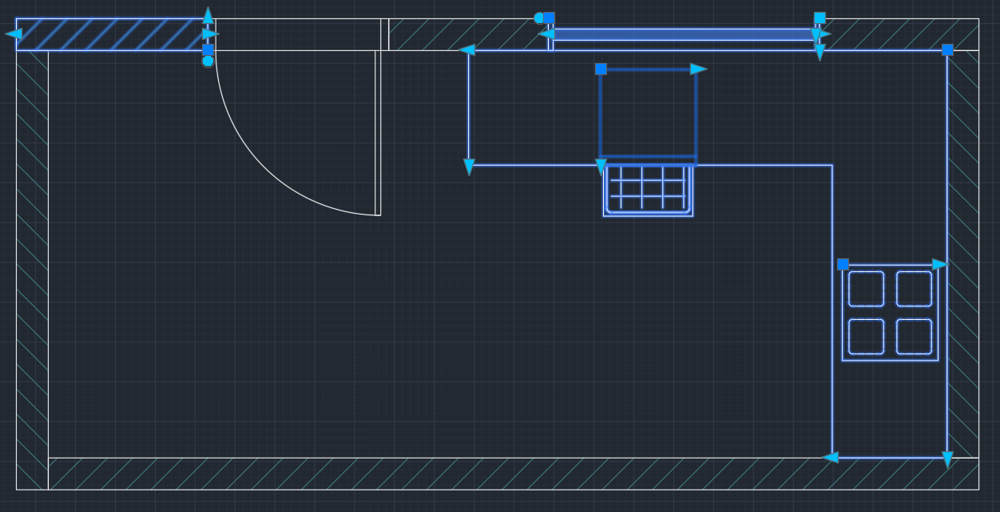

Werkzeugpalette
Installationsanleitung
Downloads enthalten [.xtp], [.dwg] und [Metadaten Ordner] für Vorschaubilder. Diese Dateien müssen im gleichen Ordner bleiben damit die Werkzeugpalette korrekt funktioniert.
Video ansehen

Einstellungen für dynamische Blöcke
Tutorial
Grundlegende Einstellungen für das Arbeiten mit dynamischen Blöcken. Absolut Bemaßung für Griffpunkte. Arbeiten mit Blöcken aus der Werkzeugpalette. Erstellen eines Grundrisses mit Blöcken und Polylinien.
Video ansehen